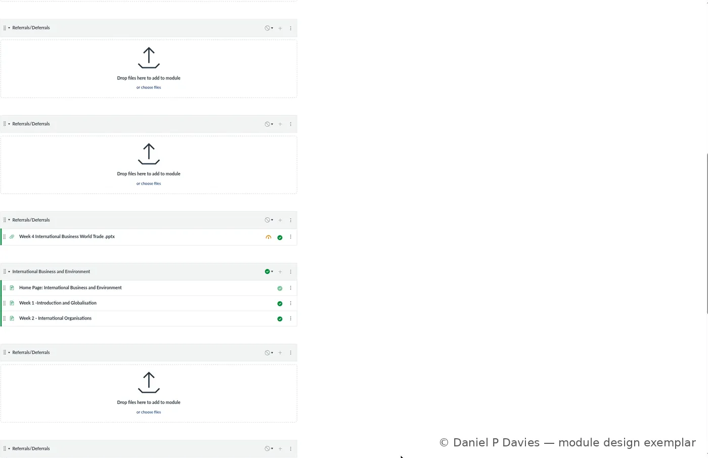
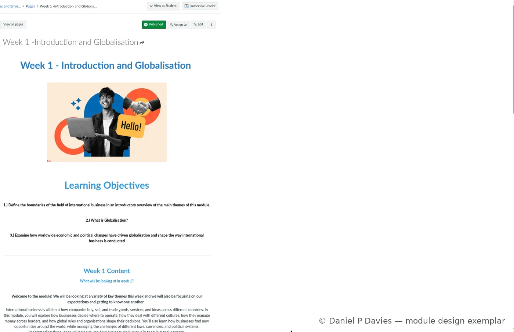
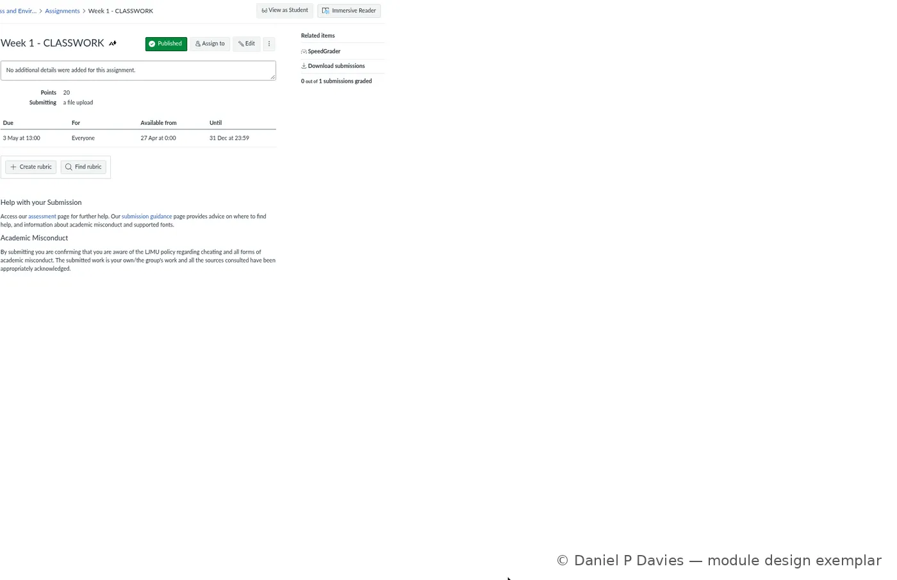
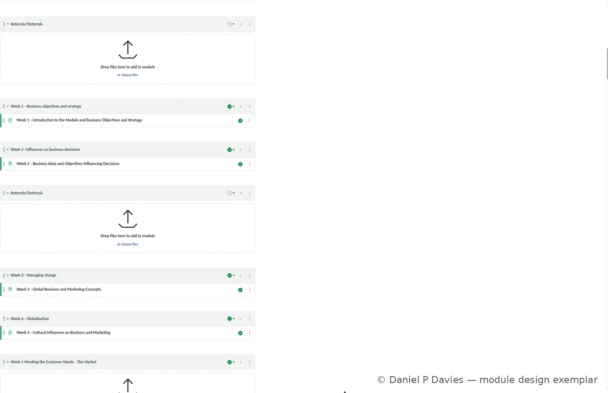
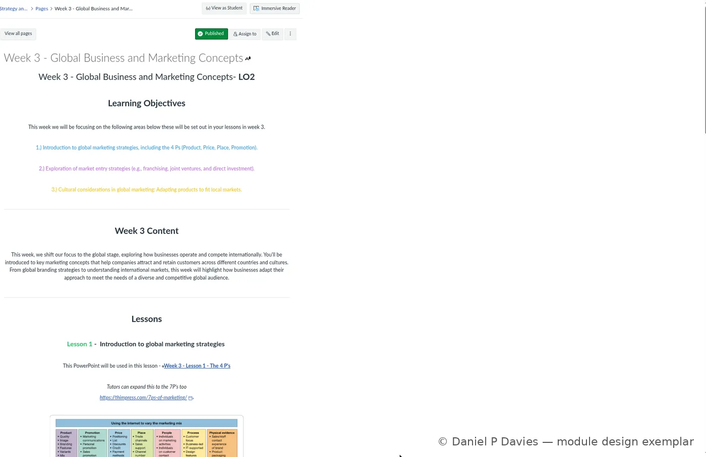
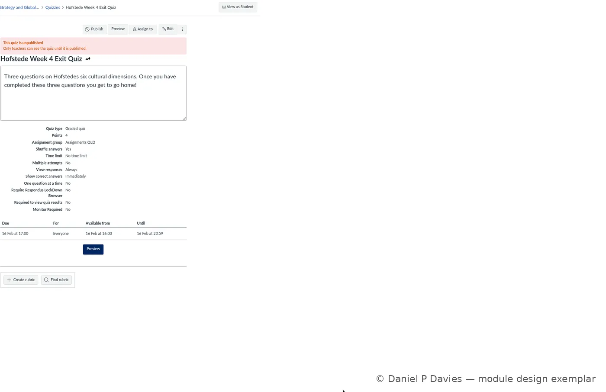
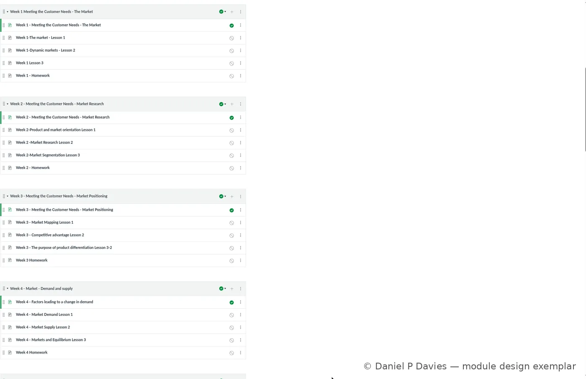
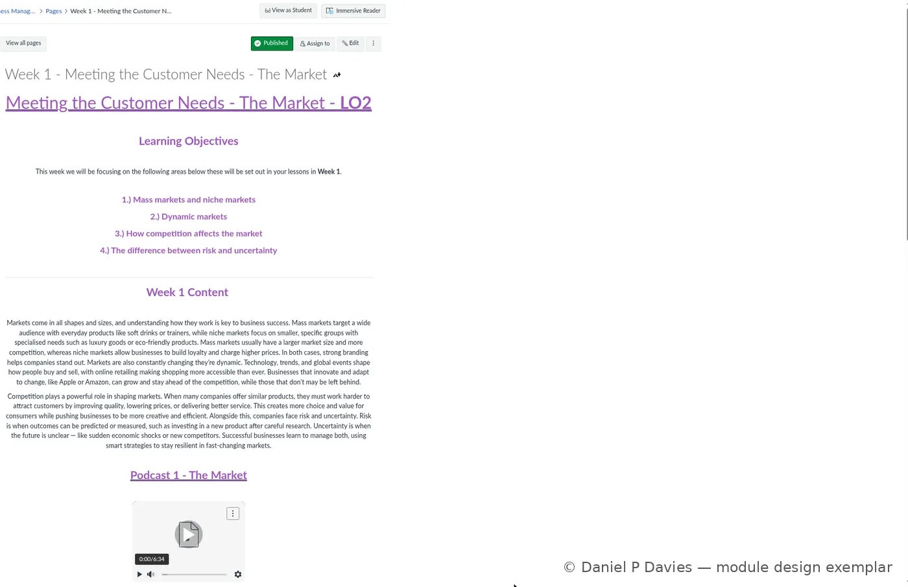
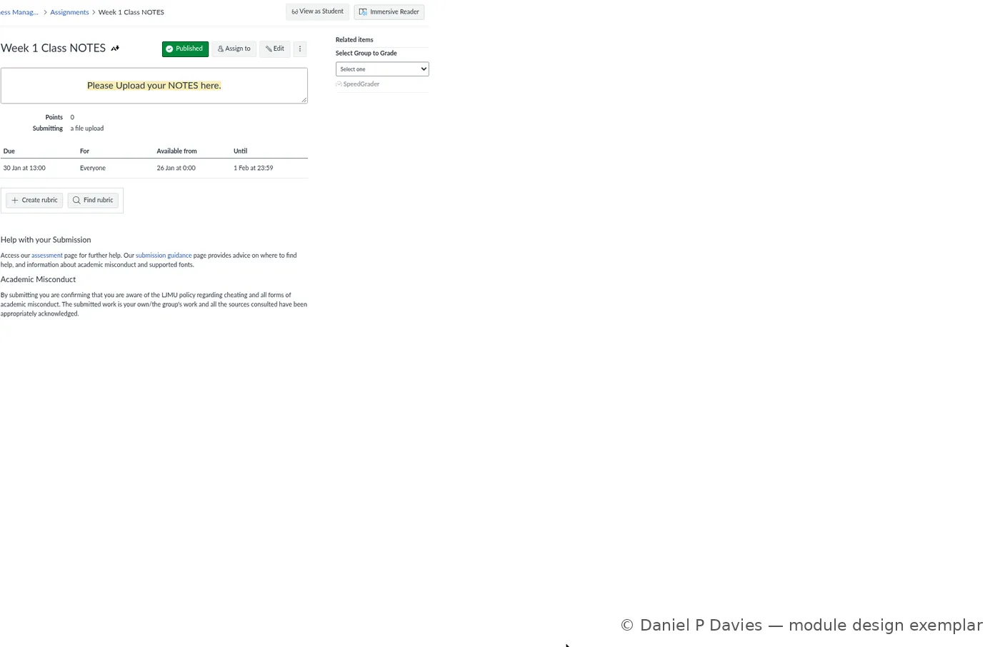

Teaching
At Level 4, students are learning the subject, the conventions of UK academic writing, and what quality looks like in a new academic culture, all at the same time. My job is to make those expectations visible and usable.
Context
I have taught business in higher education since 2024. At Study Group's LJMU International Study Centre (2024–2026), I taught Marketing and Business Strategy at Level 4 and International Business at Level 3. I taught 140 international students across all groups, most of them working in English as an additional language. Since August 2026, I have taught Level 4 Project Management, and Business and Entrepreneurship more widely, to diverse adult cohorts at Global Banking School in Manchester. My foundation is four years of teaching Business and IT in secondary and sixth-form settings, including Edexcel A-level Business, after training through a PGCE with QTS. I have since completed a PGCHE with Distinction and became a Fellow of the Higher Education Academy (FHEA).
The first undergraduate year has shaped what I believe teaching is for. I want students to begin to judge their own work rather than wait to be told how good it was.
Principles
Standards are a language to be taught
Criteria, exemplars and feedback comments are themselves texts that international students have to learn to read. A rubric handed out in week one is not yet understood. We unpick criteria together, compare exemplars, and practise applying the terms to short pieces of work before anything is assessed. When students can name what a stronger answer does, feedback has something to attach to.
Feedback should be used, not just received
I design feedback so that it points forward to the next draft or task, and I build in moments where students act on it. Following Carless and Boud (2018), I see feedback literacy as something students develop through practice, and my role as creating the conditions for that practice, not simply writing more comments.
Live time should sample thinking
I use class time for application, peer explanation and critique rather than for definition, and I try to evaluate every change I make in a modest, honest way, and to act on what I find.
Inclusion is designed in, not added on
For mixed-proficiency cohorts I keep pre-work to a viable minimum, provide guided notes, use write-before-speak routines so that quieter students have something ready to say, and offer core and stretch versions of the same task.
Generative AI is a design question, not a policing one
Generic AI tools often produce fluent answers that miss the module’s outcomes and the way the content was taught. Detection and bans leave that gap in place and add mistrust. My response is to tighten what assessment and live time ask of students, to make my expectations about acceptable use explicit, and, through my doctoral work, to build a module-specific agent grounded in my own materials that will not write assessed work.
An evaluated example
In one flipped International Year One session on Hofstede’s cultural dimensions with 16 predominantly EAL students, a short Panopto webcast set a shared baseline, a Vevox retrieval quiz doubled as a diagnostic for grouping, groups worked on a scaffold from definition to application to limitations, and a Canvas exit ticket closed the loop.
All respondents said the video connected closely to the class (62.5% very, 37.5% quite), but preparedness was uneven and a quiz setting cost us task time. I shortened the video, added a brief pre-class check and a one-page task checklist, and offered a transcript.
Curriculum and assessment design
- 3modules completely redesigned, 12 weeks each
- 108lessons, each with a full PowerPoint deck
- 216formative tasks, two per lesson
- ~70summative assessments (exams and referral exams) with full mark schemes, across three intakes
At Study Group I completely redesigned my three modules end to end in the VLE — schemes of work, lessons and PowerPoint decks, formatives, summatives, mark schemes and material banks — to make them more effective: Marketing and Business Strategy at Level 4, and International Business at Level 3. Each ran for 12 weeks with three lessons a week. The banks of module material were aligned across lessons and assessments and grounded in higher education pedagogical theory. Across three intakes I wrote about 70 summative assessments, exams and referral exams, each with a full mark scheme: an exam pack of about 30 documents per intake. As internal examiner for Level 4 exams and case studies I marked about 110 scripts per cycle, and external moderation confirmed my marking in 2026. In 2024/25 I also taught a 10-week Project Skills block for Study Group to international students progressing to Leeds Beckett University and the University of Leeds. I designed flipped classroom sessions with pre-class VLE material such as podcasts. I also delivered online summative assessments in partnership with Liverpool John Moores University (LJMU).
I also wrote assessment briefs and contributed to national Learning & Development and Quality committees and assessment revalidation. Curriculum and assessment improvements contributed to a 0% post-referral failure rate and a 60% cohort mean; my highest module mean was 66%, with a larger cohort.
Module design
I designed and built three Canvas modules for Study Group from start to finish, with each lesson planned as a two-hour session for international students. The screens below show that design, and each one has a short note on the educational theory behind the decision. No student information is shown.


















Theory referred to above
- Biggs, J. (1996) ‘Enhancing teaching through constructive alignment’, Higher Education, 32(3), pp. 347–364. doi:10.1007/BF00138871
- Black, P. and Wiliam, D. (1998) ‘Assessment and classroom learning’, Assessment in Education: Principles, Policy & Practice, 5(1), pp. 7–74. doi:10.1080/0969595980050102
- CAST (2024) Universal Design for Learning Guidelines. udlguidelines.cast.org
- Nicol, D.J. and Macfarlane-Dick, D. (2006) ‘Formative assessment and self-regulated learning: a model and seven principles of good feedback practice’, Studies in Higher Education, 31(2), pp. 199–218. doi:10.1080/03075070600572090
- Roediger, H.L. and Karpicke, J.D. (2006) ‘Test-enhanced learning: taking memory tests improves long-term retention’, Psychological Science, 17(3), pp. 249–255. doi:10.1111/j.1467-9280.2006.01693.x
- Sweller, J. (1988) ‘Cognitive load during problem solving: effects on learning’, Cognitive Science, 12(2), pp. 257–285. doi:10.1207/s15516709cog1202_4
- Wood, D., Bruner, J.S. and Ross, G. (1976) ‘The role of tutoring in problem solving’, Journal of Child Psychology and Psychiatry, 17(2), pp. 89–100. doi:10.1111/j.1469-7610.1976.tb00381.x
Recognition
Fellow of the Higher Education Academy (Advance HE, 2026); PGCHE with Distinction (Falmouth University, 2026); PGCE Business Studies & IT with QTS (Liverpool Hope University, 2020).
Across all of this I see myself as a practitioner who studies his own teaching: designing carefully, evaluating honestly and changing what does not work.
Reference
Carless, D. and Boud, D. (2018) ‘The development of student feedback literacy: enabling uptake of feedback’, Assessment & Evaluation in Higher Education, 43(8), pp. 1315–1325.